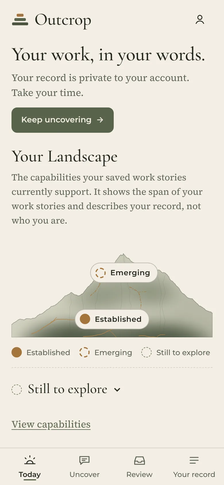
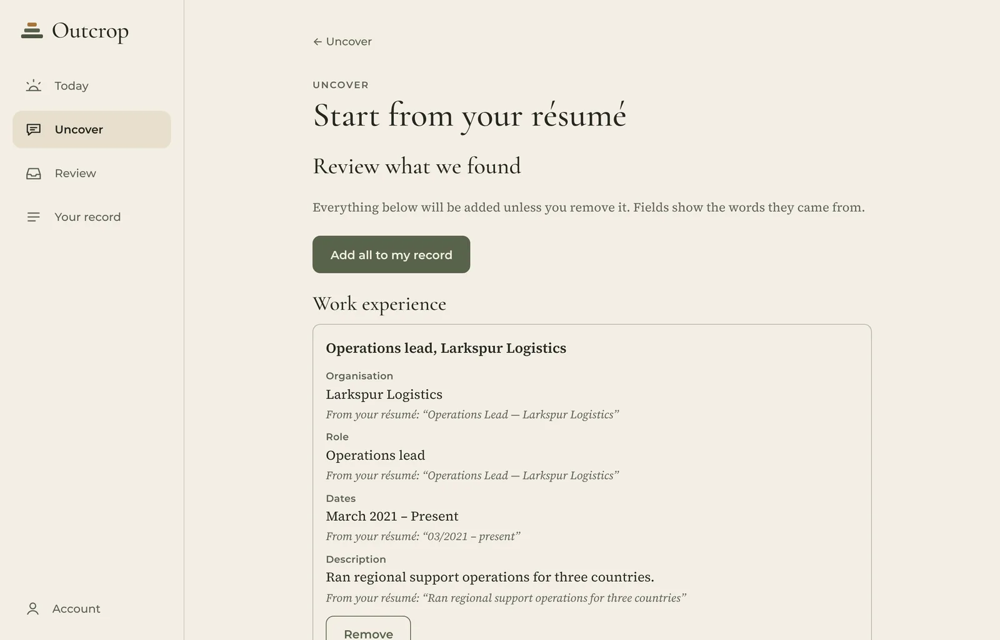
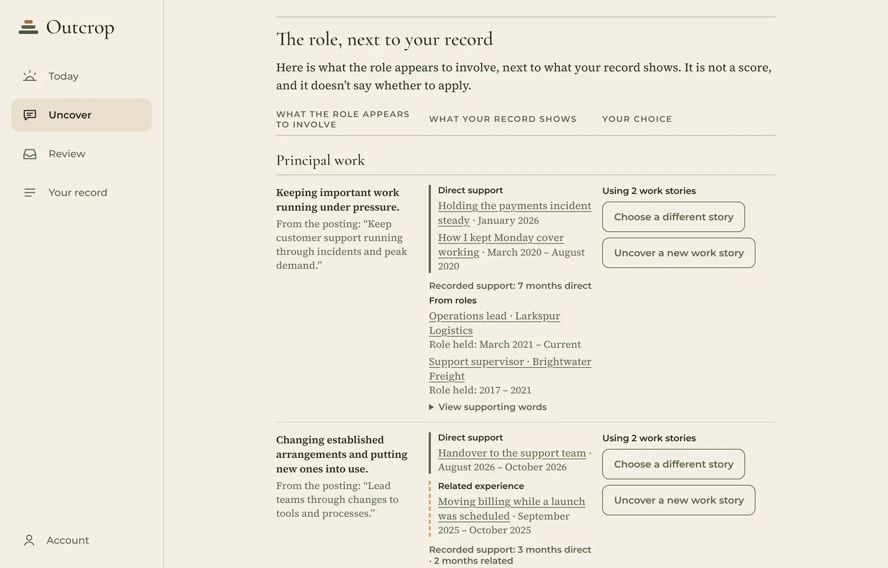
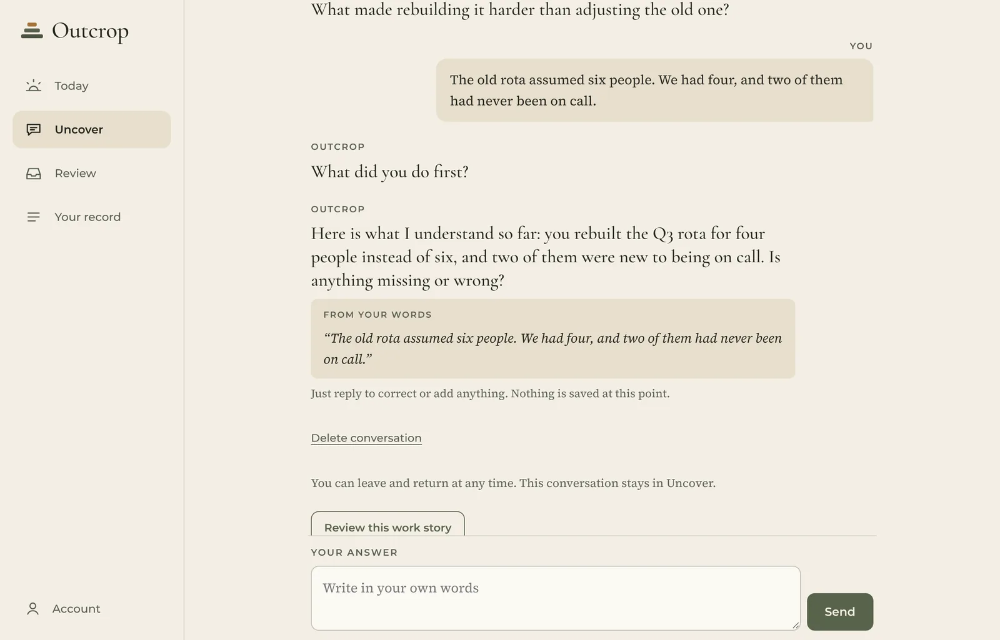
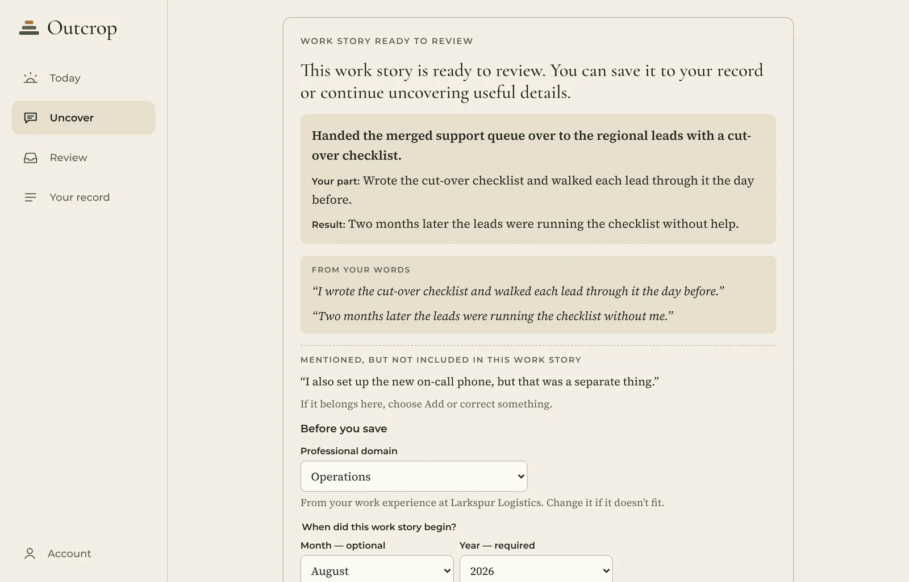
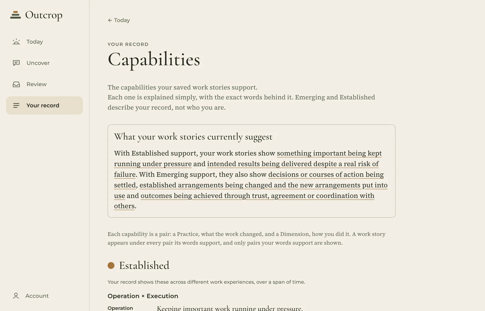
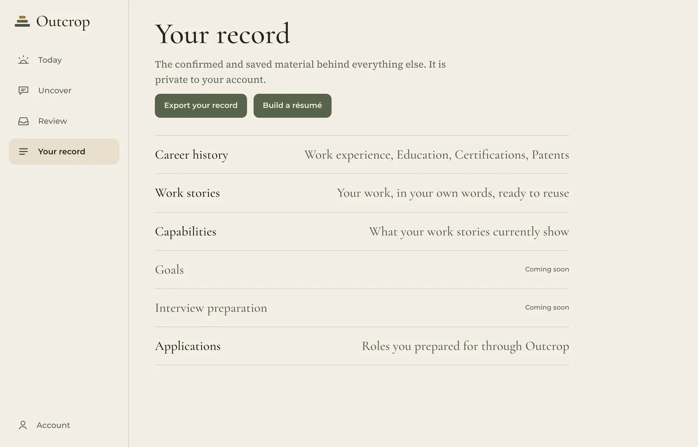

The role
Alex checks a service design role
“Keep customer support running through incidents and peak demand.”
Not in your record yet
Outcrop asks whether Alex has done something similar.
Upload your résumé, check a job against your record, uncover the work stories behind it.
Outcrop surfaces the capabilities they demonstrate, ready for your applications, interviews, performance reviews and, most importantly, your own understanding.
The feedback you never got, from your own record. Know where you stand before anyone tells you.
Free for professionals. Always.

How Outcrop works
Your résumé doesn’t show the problems you solved, the decisions you made, or how you held a team together.
Recruiters see the list. They don’t see the context that shows how you actually do the job. And that’s what sets you apart.
Outcrop lays out your roles, education and certifications, each with the words it came from. You review it before anything joins your record.

Paste a job posting. Outcrop reads what the role appears to involve, based only on the posting, and shows what your record supports, what is related, and what is not in your record yet.
No score. Just a clearer view, so you can judge whether the role fits the direction you want to take.

Where your record is thin, Outcrop asks a few focused questions, in the posting’s own terms: what you did, how you approached it, and what happened.

Once you save a work story, it becomes part of your record, ready for résumés, applications, interviews and performance reviews.
Nothing joins your record until you save it.

The Capabilities page shows, in plain language, what your work stories support. It highlights the strengths you didn’t realize you were building. No scores. No rankings.

Your work stays in one record. The next time an opportunity appears, you start from everything you’ve already uncovered, instead of rebuilding your résumé from scattered files.

A fictional example
Alex Rivera is an invented person. The work, organisations and job posting below are invented too.
The role
“Keep customer support running through incidents and peak demand.”
Not in your record yet
Outcrop asks whether Alex has done something similar.
The conversation
“I kept the incident channel to one voice and gave updates every twenty minutes until payments recovered.”
Alex's own words, in Uncover.
The work story
Kept a payments incident to one channel and one voice until payments recovered.
Saved after Alex reviewed it.
Back to the role
“Keep customer support running through incidents and peak demand.”
Direct support
The story stays in Alex's record, ready for the next application and the interview.
What Outcrop promises
Free for professionals. Always.
Why? Because it would be wrong to charge you.
People need a record of their work most in transition: after a layoff, before a promotion, on the way back to work. Charging people in those moments exploits them when they are most vulnerable.
You are not the product, and you will never pay to prove your own worth.
Early access
Outcrop is opening in stages. Request early access and Outcrop will let you know when your place is ready.